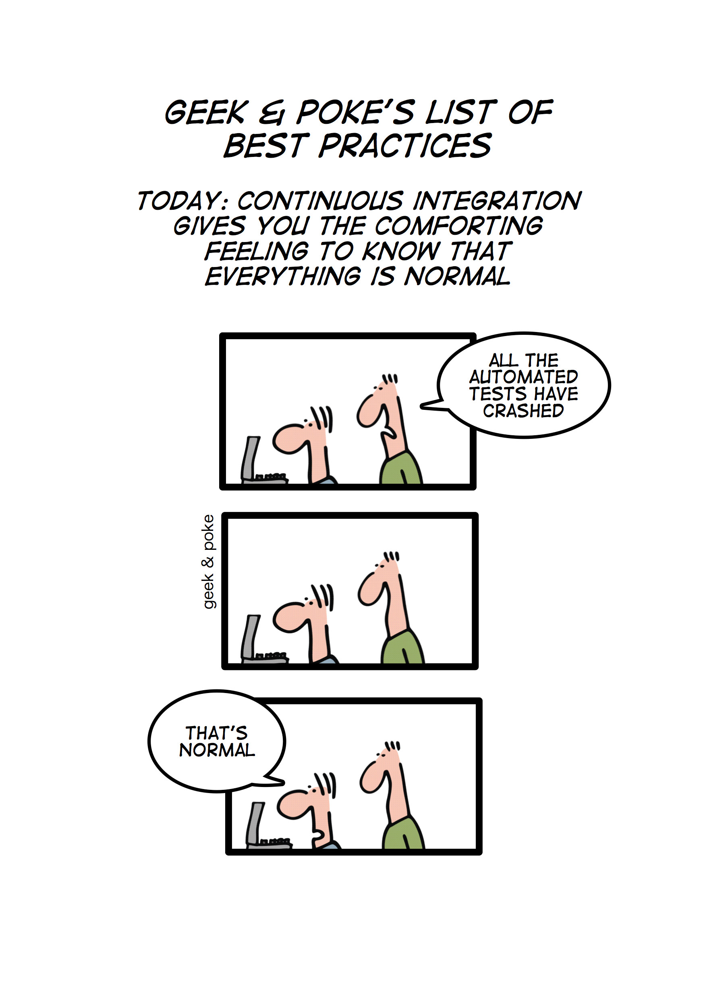
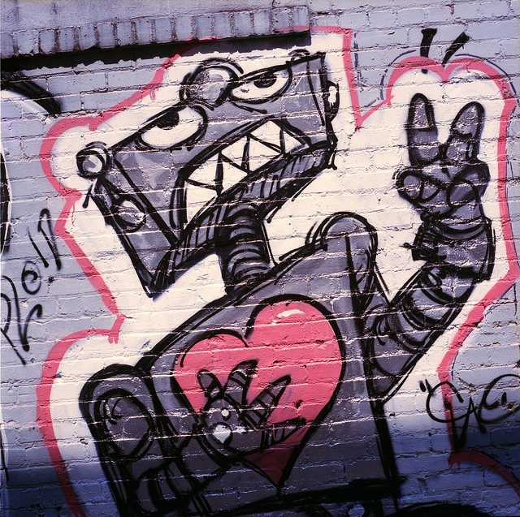
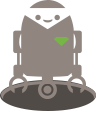
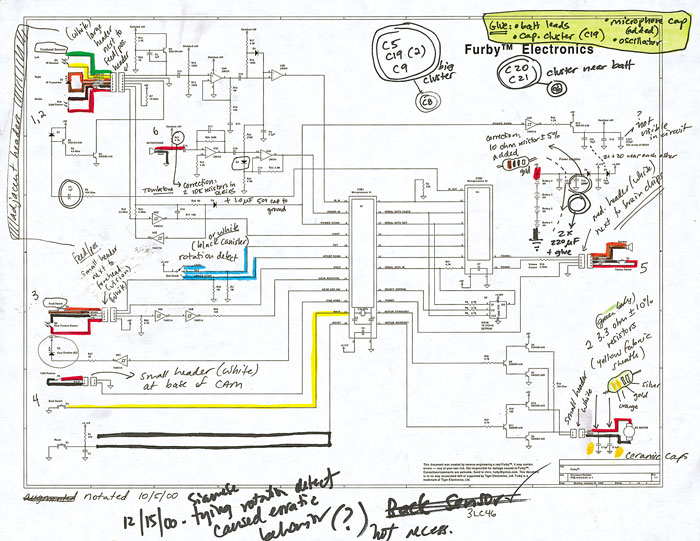
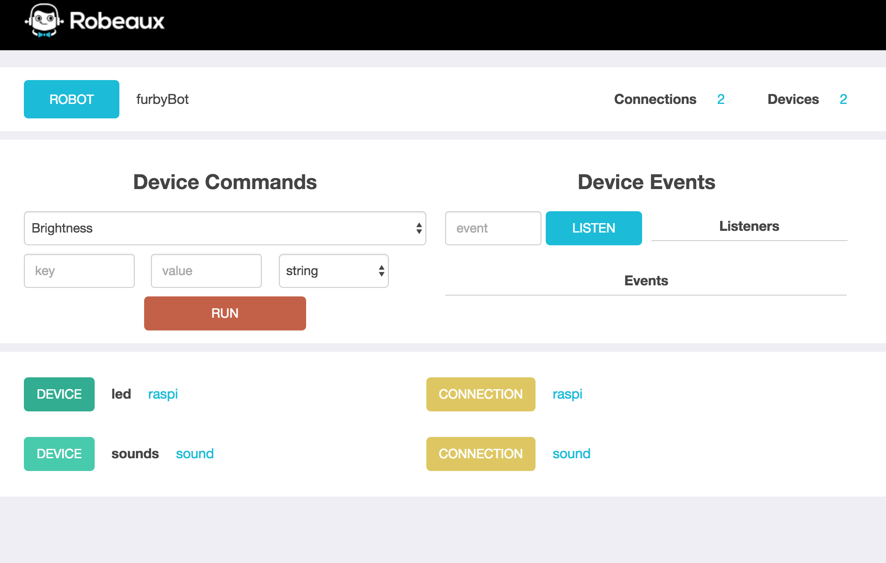
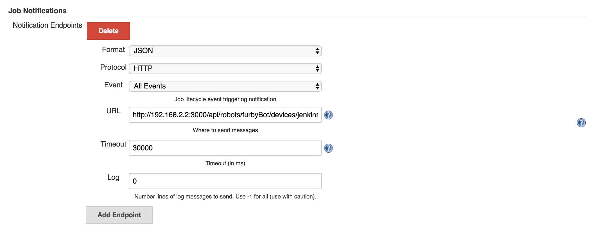
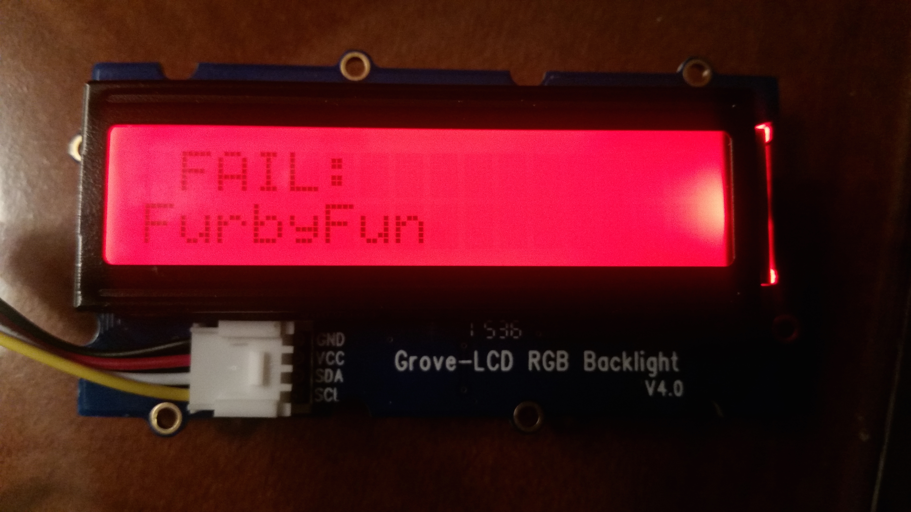
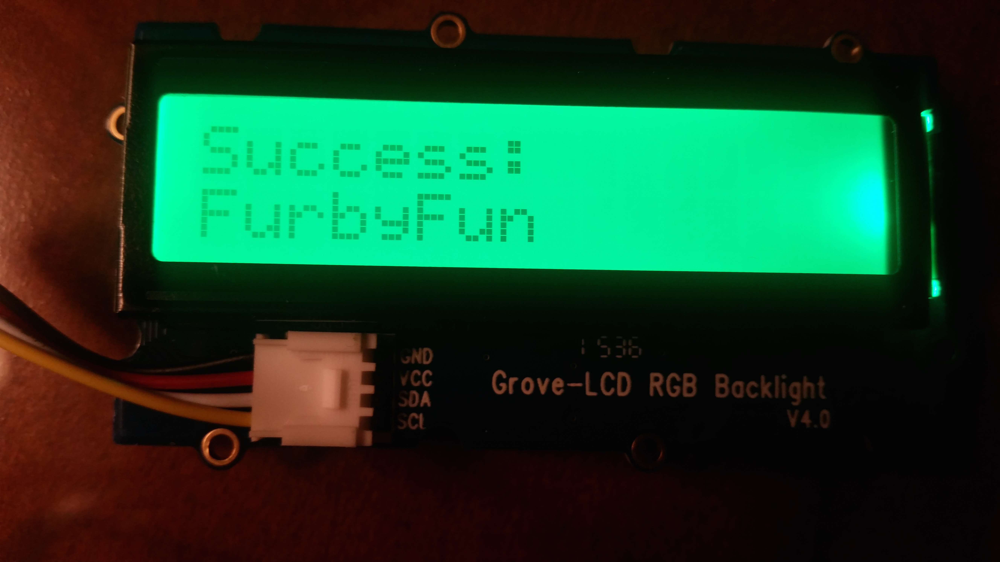

Furby: "Go" Away!
Jenkins Furby Ravings via Gobot and Go
Furby zoology by Tina Coleman | @colemanserious | tina@haydensoft.com
History of Furby
- 1998: Furby enters the market
- 2005: Emoto-tronic Furby, "Furby Island" TV show
- 2012: Resurge of the Furby: now with iOS and Android Apps
- 2013: 2 Coleman daughters receive Furbies
- 2014: OSCON session: "Arduino + Furby Broken Build Notification - Oh, You'll Want to Fix It Quick!"
- 2015: Chewbacca Furby
- tomorrow... a Furby SkyNet
Ignoring build notifications

Feel my Furby wrath
Labor of Love
http://github.com/colemanserious/furby-gobot Go
- Build smaller modules
- Fast compile + build time
- Concurrency handling
- Active community
- Built in tooling
- Docker
Enough to go see what all the fuss is about
Gobot
- Platforms: Raspberry Pi, BeagleBone, Sphero, Arduino, OpenCV, LeapMotion, ARDrone, Pebble...
- Devices
- GPIO (General Purpose Input/Output)
- I2C (Inter-Integrated Circuit)
- Related projects in Ruby (Artoo) and Javascript (Cylon.js)
 - Model: Connections, devices, work
How DO you control a Furby?
Annotated Furby schematics OR...
Control using sound
Playing a Sound
// PlayWav plays the filename provided.
// ..
// Note: Did see audio package in golang, however its part of gomobile
// Other alternatives exist - OpenAL, portaudio, ... aplay seemed simplest
func PlayWav(fileName string) (err error) {
if fileName == "" {
log.Println("Require filename for WAV file.")
return errors.New("Requires filename for WAV file.")
}
// command to play a WAV file on Raspberry Pi
cmd := exec.Command("aplay", fileName)
err = cmd.Run()
if err != nil {
log.Println(err)
return err
}
// Need to return to fulfill function sig, even though returning an empty
return
}
Trying it out - console app
Awesome Go: 'A curated list of awesome Go frameworks, libraries and software'spf13/cobra - "A Commander for Modern Go CLI interactions"
cobra init
cobra add playSound
playSound command
Within cmd/playSound.go...
var playSoundCmd = &cobra.Command{
Use: "playSound",
Short: "Play a sound file given as an argument.",
Run: func(cmd *cobra.Command, args []string) {
if len(args) == 0 {
log.Println("Must provide filename")
return
}
err := sounds.PlayWav(args[0])
if err != nil {
log.Println("Unable to execute command - could not play sound.")
}
},
}
func init() {
RootCmd.AddCommand(playSoundCmd)
}
Audio Driver / Adaptor
Receive requests to play quickly, but only play 1 at a time...Don't block channel, though we might drop playing sounds
// Use semaphore to control how many sounds might be playing at a time
var sem = make(chan int, 1)
func (d *AudioDriver) Start() (err []error) {
go d.serve(d.queue)
return
}
// See example at https://golang.org/doc/effective_go.html#concurrency
// Purpose: receive messages on channel, but throttle execution of playing
func (d *AudioDriver) serve(queue chan string) {
for req := range queue {
sem <- 1
go func(req string) {
fmt.Printf("Playing sound %v\n", req)
// d.Sound is on Adaptor, which
// calls aplay using similar logic as PlayWav
d.Sound(req)
<-sem
}(req)
}
}
Basic Gobot - Light up LED + sound
See cmd/ledOn.go
gbot := gobot.NewGobot()
r := raspi.NewRaspiAdaptor("raspi")
audioAdaptor := audio.NewAudioAdaptor("sound")
// Gobot maps the pin to the GPIO pin
led := gpio.NewLedDriver(r, "led", "33")
audioDriver := audio.NewAudioDriver(audioAdaptor, "sounds", nil)
work := func() {
gobot.Every(5*time.Second, func() {
led.Toggle()
audioDriver.Sound("resources/foo.wav")
})
}
robot := gobot.NewRobot("furbyBot",
[]gobot.Connection{r, audioAdaptor},
[]gobot.Device{led, audioDriver },
work,
)
Driving via the web
api.NewAPI(gbot).Start()
Any commands on drivers are exposed, as well as events
Web driven
Use :3000/ to interact with your robot
How does Jenkins notify us?
Job Notification, sending through JSON to a URL
Integrating info from Jenkins into Gobot
Part I: Receive the info.
j.AddEvent(JobResult)
j.AddCommand("ParseResults", func(params map[string]interface{})
interface{} {
var snapshot JobOutcomeSnapshot
result := ParseJobState(params)
if (JobOutcome{}) != result {
fmt.Printf("Result: %v\n", result)
lastOutcome, ok := jobStates[result.Name]
if ok {
fmt.Printf("Last outcome: %v\n", lastOutcome)
}
snapshot.Outcome = result
snapshot.RanAt = time.Now()
jobStates[result.Name] = snapshot
gobot.Publish(j.Event(JobResult), result)
}
return result
})
Integrating info from Jenkins into Gobot
Part II: Do something with it...
gobot.On(jenkinsDriver.Event("jobResult"), func(data interface{}) {
jobResult, ok := data.(jenkinsconnect.JobOutcome)
if ok {
switch jobResult.State {
case jenkinsconnect.SUCCESS:
furby.ExecuteCommand("burp")
case jenkinsconnect.FAILED:
furby.ExecuteCommand("fart")
default:
}
}
})
That furby.ExecuteCommand()
- FurbyDriver modeled after gpio.LedDriver
- Adds ExecuteCommand()
// Map command name to file name for command
// 3 digits correspond to code from Hacksby library - see Command.pm
var commands = map[string]string{
"burp": "864-burp.wav",
"fart": "865-fart.wav",
"listen": "820-listen.wav",
...
}
....
func (f *FurbyDriver) ExecuteCommand(command string) (err error) {
if !f.State() {
f.On()
}
if file, ok := commands[command]; ok {
f.soundQueue <- file
return
} else {
return fmt.Errorf("Command %v not available", command)
}
return
}
Show 'em what's broken!
Using 16x2 LCD, with RGB colors, show the build status...| Failing build |  |
| Successful build |  |
Final furbyBot - Part 1
gbot := gobot.NewGobot()
api.NewAPI(gbot).Start()
r := raspi.NewRaspiAdaptor("raspi")
audioAdaptor := audio.NewAudioAdaptor("sound")
jenkinsAdaptor := jenkinsconnect.NewJenkinsconnectAdaptor("jenkins")
// Set up asynchronous channel - if we get more than 3 sounds being played
// in a row, something's up
csoundFiles := make(chan string, 3)
furby := furby.NewFurbyDriver(r, "furby", "16", csoundFiles)
audioDriver := audio.NewAudioDriver(audioAdaptor, "sounds", csoundFiles)
jenkinsDriver := jenkinsconnect.NewJenkinsconnectDriver(jenkinsAdaptor,
"jenkins-command")
screen := i2c.NewGroveLcdDriver(r, "screen")
Final furbyBot - Part 2
work := func() {
...
gobot.On(jenkinsDriver.Event("jobResult"), func(data interface{}) {
jobResult, ok := data.(jenkinsconnect.JobOutcome)
if ok {
switch jobResult.State {
case jenkinsconnect.SUCCESS:
screen.Home()
screen.Clear()
screen.SetRGB(0, 255, 0)
screen.Write("Success:\n" + jobResult.Name)
furby.ExecuteCommand("burp")
case jenkinsconnect.FAILED:
screen.Home()
screen.Clear()
screen.SetRGB(255, 0, 0)
screen.Write(" FAIL:\n" + jobResult.Name)
furby.ExecuteCommand("fart")
default:
}
}
})
}
Oh Developers...
Resources
- Effective Go
- Gobot.io
- http://awesome-go.com: a curated list of Go frameworks, libraries, and software